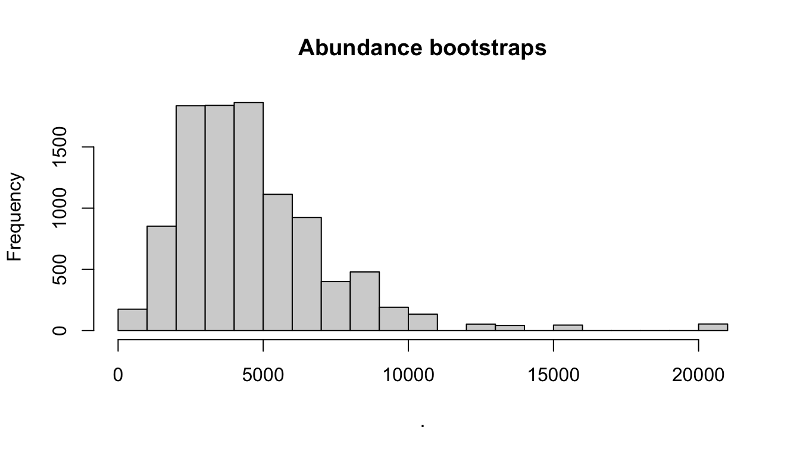

15 Central North Pacific
2002, 2010, and 2017
Data processing
Settings
Survey-wide settings
data(species_codes)
data(ships)
data(group_size_coefficients)
survey <- load_survey_settings(
out_handling = 'remove',
max_row_interval = Inf,
segment_method = "equallength",
segment_target_km = 150,
segment_max_interval = 24,
segment_remainder_handling = c("segment"),
ship_list = ships,
species_codes = species_codes,
group_size_coefficients = group_size_coefficients,
smear_angles = FALSE
)Cohort-specific settings
Cohort 1: all species
all_species <- load_cohort_settings(
id = "all", # *
species = NULL,
strata = c('MHI', 'HI_EEZ', 'OtherCNP'), # *
probable_species = FALSE,
sighting_method = 0,
cue_range = 0:7,
school_size_range = c(0, 10000),
school_size_calibrate = TRUE,
calibration_floor = 0,
use_low_if_na = TRUE,
io_sightings = 0,
geometric_mean_group = TRUE,
truncation_km = 7.5, # *
beaufort_range = 0:6,
abeam_sightings = TRUE,
strata_overlap_handling = c("smallest"),
distance_types = c('S','F','N'),
distance_modes = c('P','C'),
distance_on_off = TRUE
)Rg0
# Filter to analysis only
cruzi <- filter_cruz(noaa_10km_1986_2020,
analysis_only = TRUE,
eff_types = 'S',
bft_range = 0:6,
on_off = TRUE)# Prepare settings list for each species
species <- list(
list(spp = c('005', '016', '017'),
title = 'Delphinus spp',
truncation = 5.5),
list(spp = c('002','006','089','090'),
title = 'Stenella attenuata spp',
truncation = 5.5),
list(spp = c('003','010','011','088','100','101','102','103','107'),
title = 'Stenella longirostris spp',
truncation = 5.5),
list(spp = '013',
title = 'Striped dolphin',
truncation = 5.5),
list(spp = '015',
title = 'Rough-toothed dolphin',
truncation = 5.5),
list(spp = '018',
title = 'Bottlenose dolphin',
truncation = 5.5,
pool_bft = '12'),
list(spp = '021',
title = "Risso's dolphin",
truncation = 5.5,
pool_bft = '12'),
list(spp = '026',
title = "Fraser's dolphin",
truncation = 5.5),
list(spp = '031',
title = 'Melon-headed whale',
truncation = 5.5),
list(spp = '032',
title = 'Pygmy killer whale',
truncation = 5.5),
list(spp = '036',
title = 'Short-finned pilot whale',
truncation = 5.5,
pool_bft = '12'),
list(spp = '037',
title = 'Killer whale',
truncation = 5.5,
pool_bft = '12'),
list(spp = '046',
title = 'Sperm whale',
truncation = 5.5),
list(spp = c('047', '048', '080'),
title = 'Kogia spp',
truncation = 4.0),
list(spp = '061',
title = "Cuvier's beaked whale",
truncation = 4.0),
list(spp = '049',
title = 'Unid. beaked whale',
truncation = 5.5),
list(spp = c('001','051','052','053','054','055',
'056','057','058','059','060','081',
'082','083','106','109'),
title = 'Mesoplodon spp',
truncation = 4.0),
list(spp = '044',
title = "Dall's porpoise",
truncation = 5.5,
regions = 'CCS'),
list(spp = '071',
title = 'Minke whale',
truncation = 4.0),
list(spp = c('072','073','099'),
title = "Sei/Bryde's",
truncation = 5.5),
list(spp = '074',
title = 'Fin whale',
truncation = 5.5,
regions = 'CCS'),
list(spp = '075',
title = 'Blue whale',
truncation = 5.5,
regions = 'CCS'),
list(spp = '076',
title = 'Humpback whale',
truncation = 5.5,
regions = 'CCS'),
list(spp = c('177','277','377','077'),
title = 'Unid. dolphin',
truncation = 5.5),
list(spp = c('078','079','098','096'),
title = 'Unid. cetacean',
truncation = 5.5)
)# Estimate Rgo for your set of species:
Rg0 <-
g0_table(cruzi,
species,
eff_types = 'S',
jackknife_fraction = 0.1)
Density & abundance
First we can define common values that will be constant across all estimates we produce:
bootstraps <- 10
years <- 1986:2020
fit_regions <- NULL
fit_not_regions <- NULL
toplot = TRUE
verbose = TRUE
results_path <- 'cnp/lta/'
df_settings <-
list(covariates = c('bft','lnsstot','cruise','year','ship','species'),
covariates_factor = c(FALSE, FALSE, TRUE, TRUE, TRUE, TRUE),
covariates_levels = 2,
covariates_n_per_level = 10,
simplify_cue = TRUE,
simplify_bino = TRUE,
detection_function_base = 'hn',
base_model = '~1',
delta_aic = 2)For most species, we want to estimate density/abundance for the same set of year-region scenarios. To reduce code redundancy (and our work!), we can use the LTabundR function lta_estimate() to economize how we prepare our estimates input.
These are the year-region scenarios for which we want estimates:
scenarios <- list(
list(years = 2002,
regions = 'MHI'),
list(years = 2002,
regions = 'HI_EEZ',
regions_remove = 'MHI',
region_title = 'Pelagic HI_EEZ'),
list(years = 2010,
regions = 'HI_EEZ'),
list(years = 2017,
regions = 'HI_EEZ'))The lta_estimates() function will generate a custom function that makes it easy to create a set of estimates sub-lists for each species of interest:
That result, estimator, is actually a function. Here’s an example of how this function will work, using the first species pool as an example:
estimates <-
c(estimator(spp = '013', title = "Striped dolphin"),
estimator(spp = '026', title = "Fraser's dolphin"),
estimator(spp = '031', title = "Melon-headed whale"))
estimates
[[1]]
[[1]]$years
[1] 2002
[[1]]$regions
[1] "MHI"
[[1]]$spp
[1] "013"
[[1]]$title
[1] "Striped dolphin"
[[2]]
[[2]]$years
[1] 2002
[[2]]$regions
[1] "HI_EEZ"
[[2]]$regions_remove
[1] "MHI"
[[2]]$region_title
[1] "Pelagic HI_EEZ"
[[2]]$spp
[1] "013"
[[2]]$title
[1] "Striped dolphin"
[[3]]
[[3]]$years
[1] 2010
[[3]]$regions
[1] "HI_EEZ"
[[3]]$spp
[1] "013"
[[3]]$title
[1] "Striped dolphin"
[[4]]
[[4]]$years
[1] 2017
[[4]]$regions
[1] "HI_EEZ"
[[4]]$spp
[1] "013"
[[4]]$title
[1] "Striped dolphin"
[[5]]
[[5]]$years
[1] 2002
[[5]]$regions
[1] "MHI"
[[5]]$spp
[1] "026"
[[5]]$title
[1] "Fraser's dolphin"
[[6]]
[[6]]$years
[1] 2002
[[6]]$regions
[1] "HI_EEZ"
[[6]]$regions_remove
[1] "MHI"
[[6]]$region_title
[1] "Pelagic HI_EEZ"
[[6]]$spp
[1] "026"
[[6]]$title
[1] "Fraser's dolphin"
[[7]]
[[7]]$years
[1] 2010
[[7]]$regions
[1] "HI_EEZ"
[[7]]$spp
[1] "026"
[[7]]$title
[1] "Fraser's dolphin"
[[8]]
[[8]]$years
[1] 2017
[[8]]$regions
[1] "HI_EEZ"
[[8]]$spp
[1] "026"
[[8]]$title
[1] "Fraser's dolphin"
[[9]]
[[9]]$years
[1] 2002
[[9]]$regions
[1] "MHI"
[[9]]$spp
[1] "031"
[[9]]$title
[1] "Melon-headed whale"
[[10]]
[[10]]$years
[1] 2002
[[10]]$regions
[1] "HI_EEZ"
[[10]]$regions_remove
[1] "MHI"
[[10]]$region_title
[1] "Pelagic HI_EEZ"
[[10]]$spp
[1] "031"
[[10]]$title
[1] "Melon-headed whale"
[[11]]
[[11]]$years
[1] 2010
[[11]]$regions
[1] "HI_EEZ"
[[11]]$spp
[1] "031"
[[11]]$title
[1] "Melon-headed whale"
[[12]]
[[12]]$years
[1] 2017
[[12]]$regions
[1] "HI_EEZ"
[[12]]$spp
[1] "031"
[[12]]$title
[1] "Melon-headed whale"The output of estimator() is a list of sub-lists specifying a set of density/abundance estimates you want to produce based on the detection function for a single species pool.
Here is the full code for producing those estimates for all species from Bradford et al. (2021):
Multi-species pool 1
# Striped dolphin (013), Fraser's dolphin (026), Melon-headed whale (031)
if(TRUE){ # toggle
# Detection function specifications
fit_filters <-
list(spp = c('013', '026', '031'),
pool = 'Multi-species pool 1',
cohort = 'all',
truncation_distance = 5,
other_species = 'remove',
years = years,
regions = fit_regions,
not_regions = fit_not_regions)
# Density / abundance estimation plan
estimates <-
c(estimator(spp = '013', title = "Striped dolphin"),
estimator(spp = '026', title = "Fraser's dolphin"),
estimator(spp = '031', title = "Melon-headed whale"))
# Run analysis
results <- lta(cruz, Rg0, fit_filters, df_settings, estimates,
bootstraps = bootstraps,
toplot=toplot, verbose=verbose)
# Save result
(results_file <- paste0(results_path, fit_filters$pool, '.RData'))
saveRDS(results, file=results_file)
}Multi-species pool 2
# Rough-toothed dolphin (15), Common bottlenose dolphin (18), Risso's (21),
# Pygmy killer whale (32)
# Notes
# Bottlenose abundance is estimated in a separate cohort, but included here for DF fitting
if(TRUE){ # toggle
# Detection function specifications
fit_filters <-
list(spp = c('015', '018', '021', '032'),
pool = 'Multi-species pool 2',
cohort = 'all',
truncation_distance = 5,
years = years,
regions = fit_regions,
not_regions = fit_not_regions)
# Density / abundance estimation plan
estimates <-
c(estimator(spp = '015', title = "Rough-toothed dolphin"),
estimator(spp = '021', title = "Risso's dolphin"),
estimator(spp = '032', title = "Pygmy killer whale"))
# Run analysis
results <- lta(cruz, Rg0, fit_filters, df_settings, estimates,
use_g0 = TRUE,
bootstraps = bootstraps,
toplot=toplot, verbose=verbose)
# Save result
(results_file <- paste0(results_path, fit_filters$pool, '.RData'))
saveRDS(results, file=results_file)
}Multi-species pool 3
# Short-finned pilot whale (036), Longman's beaked whale (065)
# No Rg(0) available for Longman's -- will use SF pilot whale instead to estimate its weighted g0
if(TRUE){ # toggle
# Detection function specifications
fit_filters <-
list(spp = c('036', '065'),
pool = 'Multi-species pool 3',
cohort = 'all',
truncation_distance = 5,
years = years,
regions = fit_regions,
not_regions = fit_not_regions)
# Density / abundance estimation plan
estimates <-
c(estimator(spp = '036', title = "Short-finned pilot whale"),
estimator(spp = '065', title = "Longman's beaked whale",
alt_g0_spp = '036'))
# Run analysis
results <- lta(cruz, Rg0, fit_filters, df_settings, estimates,
use_g0 = TRUE,
bootstraps = bootstraps,
toplot=toplot, verbose=verbose)
# Save result
(results_file <- paste0(results_path, fit_filters$pool, '.RData'))
saveRDS(results, file=results_file)
}Multi-species pool 4
# Killer whale (37), sperm whale (46)
if(TRUE){ # toggle
# Detection function specifications
fit_filters <-
list(spp = c('037', '046'),
pool = 'Multi-species pool 4',
cohort = 'all',
truncation_distance = 5.5,
other_species = 'remove',
years = years,
regions = fit_regions,
not_regions = fit_not_regions)
# Density / abundance estimation plan
estimates <-
c(estimator(spp = '037', title = "Killer whale"),
estimator(spp = '046', title = "Sperm whale"))
# Run analysis
results <- lta(cruz, Rg0, fit_filters, df_settings, estimates,
use_g0 = TRUE,
bootstraps = bootstraps,
toplot=toplot, verbose=verbose)
# Save result
(results_file <- paste0(results_path, fit_filters$pool, '.RData'))
saveRDS(results, file=results_file)
}Multi-species pool 5
# Pygmy sperm whale (47), dwarf sperm whale (48), UNID Kogia (80),
# Blainville's beaked whale (59), Cuvier's beaked whale (61),
# UNID Mesoplodon (51), UNID beaked whale (49), Minke whale (71)
if(TRUE){ # toggle
# Detection function specifications
fit_filters <-
list(spp = c('047', '048', '080', '059', '061', '051', '049', '071'),
pool = 'Multi-species pool 5',
cohort = 'all',
truncation_distance = 4.5,
years = years,
regions = fit_regions,
not_regions = fit_not_regions)
# Density / abundance estimation plan
estimates <-
c(estimator(spp = '047', title = "Pygmy sperm whale"),
estimator(spp = '048', title = "Dwarf sperm whale"),
estimator(spp = '080', title = "Unidentified Kogia"),
estimator(spp = '059', title = "Blainville's beaked whale"),
estimator(spp = '061', title = "Curvier's beaked whale"),
estimator(spp = '051', title = "Unidentified Mesoplodon"),
estimator(spp = '049', title = "Unidentified beaked whale"),
estimator(spp = '071', title = "Minke whale"))
# Run analysis
results <- lta(cruz, Rg0, fit_filters, df_settings, estimates,
use_g0 = TRUE,
bootstraps = bootstraps,
toplot=toplot, verbose=verbose)
# Save result
(results_file <- paste0(results_path, fit_filters$pool, '.RData'))
saveRDS(results, file=results_file)
}Multi-species pool 6
# Bryde's whale (72), Sei whale (73), Fin whale (74), Blue whale (75),
# Sei/Bryde's (99), Fin/Sei/Bryde's (72, 73, 74, 99)
# Bryde's, Sei's, and Sei/Bryde's all use same Rg0 (title = "Sei/Bryde's")
# Sei/Bryde's/Fin use an average of Fin and Sei/Bryde's.
if(TRUE){ # toggle
# Detection function specifications
fit_filters <-
list(spp = c('072', '073', '074','075','099'),
pool = 'Multi-species pool 6',
cohort = 'all',
truncation_distance = 5.0,
years = years,
regions = fit_regions,
not_regions = fit_not_regions)
# Density / abundance estimation plan
estimates <-
c(estimator(spp = '072', title = "Bryde's whale"),
estimator(spp = '073', title = "Sei whale"),
estimator(spp = '074', title = "Fin whale"),
estimator(spp = '075', title = "Blue whale"),
estimator(spp = '099', title = "Sei/Bryde's whale"),
estimator(spp = c('072', '073', '099', '074'),
title = "Sei/Bryde's/Fin whale",
combine_g0 = TRUE))
# Run analysis
results <- lta(cruz, Rg0, fit_filters, df_settings, estimates,
use_g0 = TRUE,
bootstraps = bootstraps,
toplot=toplot, verbose=verbose)
# Save result
(results_file <- paste0(results_path, fit_filters$pool, '.RData'))
saveRDS(results, file=results_file)
}Unidentified rorquals
# UNID rorquals (70)
if(FALSE){ # toggle
# Detection function specifications
fit_filters <-
list(spp = c('070'),
pool = 'Unidentified rorqual',
cohort = 'all',
truncation_distance = 5.5,
years = years,
regions = fit_regions,
not_regions = fit_not_regions)
# Density / abundance estimation plan
estimates <-
c(estimator(spp = '070',
title = "Unidentified rorqual",
alt_g0_spp = c('071','099','074','075'),
combine_g0 = TRUE))
# Run analysis
results <- lta(cruz, Rg0, fit_filters, df_settings, estimates,
use_g0 = TRUE,
bootstraps = bootstraps,
toplot=toplot, verbose=verbose)
# Save result
(results_file <- paste0(results_path, fit_filters$pool, '.RData'))
saveRDS(results, file=results_file)
}Unidentified dolphins
# UNID dolphin (177, 277, 377, 77)
if(TRUE){ # toggle
spp <- c('177','277','377','077')
pool_title <- 'Unidentified dolphin'
# Detection function specifications
fit_filters <-
list(spp = c('177','277','377','077'),
pool = pool_title,
cohort = 'all',
truncation_distance = 5.5,
other_species = 'coerce',
years = years,
regions = fit_regions,
not_regions = fit_not_regions)
# Density / abundance estimation plan
estimates <- estimator(spp = spp, title = pool_title)
# Run analysis
results <- lta(cruz, Rg0, fit_filters, df_settings, estimates,
use_g0 = TRUE,
bootstraps = bootstraps,
toplot=toplot, verbose=verbose)
# Save result
(results_file <- paste0(results_path, fit_filters$pool, '.RData'))
saveRDS(results, file=results_file)
}Unidentified cetaceans
# UNID cetacean (78, 79, 98, 96)
if(TRUE){ # toggle
spp <- c('078','079','098','096')
pool_title <- 'Unidentified cetacean'
# Detection function specifications
fit_filters <-
list(spp = spp,
pool = pool_title,
cohort = 'all',
truncation_distance = 5.5,
other_species = 'coerce',
years = years,
regions = fit_regions,
not_regions = fit_not_regions)
# Density / abundance estimation plan
estimates <- estimator(spp = spp,
title = pool_title,
g0=1.0,
g0_cv = 0.0)
# Run analysis
results <- lta(cruz, Rg0, fit_filters, df_settings, estimates,
use_g0 = TRUE,
bootstraps = bootstraps,
toplot=toplot, verbose=verbose)
# Save result
(results_file <- paste0(results_path, fit_filters$pool, '.RData'))
saveRDS(results, file=results_file)
}Bottlenose dolphin
# Bottlenose dolphin (018)
if(TRUE){ # toggle
# Detection function specifications
fit_filters <-
list(spp = c('015', '018', '021', '032'),
pool = 'Bottlenose dolphin',
cohort = 'bottlenose',
truncation_distance = 5,
years = years,
regions = fit_regions,
not_regions = fit_not_regions)
# Density / abundance estimation plan
scenarios <- list(
list(years = 2002,
regions = 'MHI',
regions_remove = c('Bottlenose_KaNi', 'Bottlenose_OUFI', 'Bottlenose_BI'),
region_title = '(MHI)'),
list(years = 2002,
regions = 'HI_EEZ',
regions_remove = 'MHI',
region_title = 'Pelagic HI_EEZ'),
list(years = 2010,
regions = 'HI_EEZ',
regions_remove = c('Bottlenose_KaNi', 'Bottlenose_OUFI', 'Bottlenose_BI'),
region_title = '(HI_EEZ)'),
list(years = 2017,
regions = 'HI_EEZ',
regions_remove = c('Bottlenose_KaNi', 'Bottlenose_OUFI', 'Bottlenose_BI'),
region_title = '(HI_EEZ)'))
estimator <- lta_estimates(scenarios)
estimates <- estimator(spp = '018', title = 'Bottlenose dolphin')
# Run analysis
results <- lta(cruz, Rg0, fit_filters, df_settings, estimates,
use_g0 = TRUE,
bootstraps = bootstraps,
toplot=toplot, verbose=verbose)
# Save result
(results_file <- paste0(results_path, fit_filters$pool, '.RData'))
saveRDS(results, file=results_file)
}Pantropical spotted dolphin
# Pantropical spotted dolphin (002)
if(TRUE){ # toggle
# Detection function specifications
fit_filters <-
list(spp = c('002'),
pool = 'Pantropical spotted dolphin',
cohort = 'spotted',
truncation_distance = 5,
years = years,
regions = fit_regions,
not_regions = fit_not_regions)
# Density / abundance estimation plan
scenarios <- list(
list(years = 2002,
regions = 'MHI',
regions_remove = c('Spotted_OU', 'Spotted_FI', 'Spotted_BI'),
region_title = '(MHI)'),
list(years = 2002,
regions = 'HI_EEZ',
regions_remove = 'MHI',
region_title = 'Pelagic HI_EEZ'),
list(years = 2010,
regions = 'HI_EEZ',
regions_remove = c('Spotted_OU', 'Spotted_FI', 'Spotted_BI'),
region_title = '(HI_EEZ)'),
list(years = 2017,
regions = 'HI_EEZ',
regions_remove = c('Spotted_OU', 'Spotted_FI', 'Spotted_BI'),
region_title = '(HI_EEZ)'))
estimator <- lta_estimates(scenarios)
estimates <- estimator(spp = '002', title = 'Pantropical spotted dolphin')
# Run analysis
results <- lta(cruz, Rg0, fit_filters, df_settings, estimates,
use_g0 = TRUE,
bootstraps = bootstraps,
toplot=toplot, verbose=verbose)
# Save result
(results_file <- paste0(results_path, fit_filters$pool, '.RData'))
saveRDS(results, file=results_file)
}Stratified results
Table 1a. Total and systematic sample sizes.
Table 1b. Sample sizes of sightings used in density esitmation.
Table 2. Detection functions for cetacean species and taxonomic categories.
Table 3. Estimates of line-transect parameters for cetacean species and taxonomic categories – stratified in 2002.
Table 4. Estimates of density (individuals per 1,000 km2) and abundance for cetacean species and taxonomic categories sighted while on systematic survey effort – stratified in 2002.
De-stratified results
# Destratify
ltas2 <- lta_destratify(ltas, 2002,
combine_method = 'arithmetic',
new_region = '(HI_EEZ)',
verbose = FALSE)
# Generate report
reporti <- lta_report(ltas2, cruz)Table 3. Estimates of line-transect parameters for cetacean species and taxonomic categories.
Table 4. Estimates of density (individuals per 1,000 km2) and abundance for cetacean species and taxonomic categories sighted while on systematic survey effort.